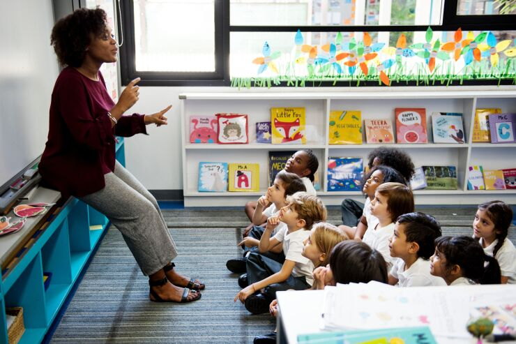

"BETTER THAN A THOUSAND DAYS OF DILLIGENT STUDY IS ONE DAY WITH A GREAT TEACHER"

TEACHER:
A teacher is a person who helps people to learn. A teacher often works in a classroom. There are many different kinds of teachers. Some teachers teach young children in kindergarten or primary schools. Others teach older children in middle, junior high and high schools. Some teachers teach adults in colleges and universities. Some teachers are called professors.
There are different ways of teaching. Different teachers use a variety of methods to teach. Teachers explain new knowledge, write on a blackboard or whiteboard, sit behind their desks on chairs, help students with their work and mark students' work. They may also use a computer to write tests, assignments or report cards for the class.
IMPORTANCE:
Teachers are the pillar of strength,and the guiding force in a students' lives. Teachers pass on values to children,prepare them for further education,and are the main contributor to good education in a society. Students are deeply affected by teachers' love and affection,character, competence,and moral commitment.